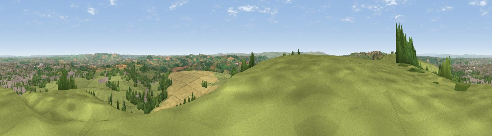

Maes Knoll
#5487 in England · top 6% of its area beats it · near Norton MalrewardWhere it is
The exact computed spot (ST 60208 66184). Click the marker for map links.
The view, rendered

A 360° render of this exact spot computed from the terrain model, tree cover and land cover — summer colours, afternoon light, calibrated against photographs of famous viewpoints. Real trees, hedges and buildings will differ in detail.
The panorama
Grey silhouette: terrain skyline in each direction (720 bearings, Earth curvature and refraction included). Dashed green: skyline with trees (+15 m) and buildings (+8 m) as obstacles. Blue strip: how far the ground is visible on each bearing.
Where the view opens
Wedge length = distance to the farthest visible ground on that bearing (vegetation-aware). Rings at 10, 25 and 50 km.
What fills the view
58% grassland · 18% woodland · 12% built-up · 12% cropland
Angular shares of the visible panorama (visual magnitude), not map area. Landscape diversity 0.49 (0–1 Shannon).
Key numbers
More beautiful places nearby
The staircase of upgrades: each row has a higher view potential than everything closer. Driving times are estimates from straight-line distance, calibrated against real road routing — check an actual route before setting out.
| Place | Direction | Drive | Score |
|---|---|---|---|
| Viewpoint near Norton Malreward | WNW · 1 km | ~2 min | 72.9 |
| Viewpoint near Kelston | E · 11 km | ~20 min | 74.2 |
| Viewpoint near North Stoke | ENE · 11 km | ~21 min | 75.4 |
| Hanging Hill | ENE · 12 km | ~22 min | 76.4 |
| Beacon Batch | SW · 15 km | ~26 min | 79.4 |
| Bleadon Hill [Loxton Hill] | WSW · 25 km | ~41 min | 79.6 |
| Viewpoint near Stinchcombe | NNE · 35 km | ~53 min | 80.5 |
| Viewpoint near Holford | WSW · 51 km | ~73 min | 80.8 |
51.39329, -2.57330 · source: osm peak · position refined by local search. Computed location — check access rights before visiting.